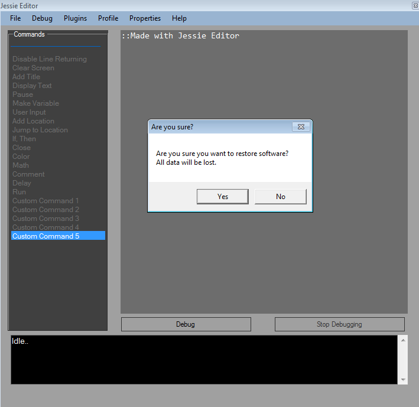

Restoring Jessie Editor
If
you have made an error in Jessie Editor, such as forgetting your
password, adding a malicious repo, or downloaded a bad plugin, you can
restore Jessie Editor to it's defualt out of box state with one command.
Warning: All
data will be lost including repos, plugins, points, Student name, and
all settings. Make sure to write down your point value before
restoring and backup all plugins you wan't to keep to a flash drive or other secure location.
If
you still wan't to restore Jessie Editor, you can restore it by going
to the properties menu and clicking restore. A prompt will appear and
ask you
if you are sure if you want to restore, if you want to click yes, if you have changed your mind then click no.

back